Como tocar o canal sozinho, com o Estúdio KÖLJA TV: programas próprios, grade, filmes, anúncios, links quebrados, publicar e desfazer.
Estúdio KÖLJA TV · versão {{VERSAO}} · {{DATA}}
Começo rápido
O Estúdio é um programa que roda no seu Mac e abre no navegador. Ele não usa inteligência artificial nem precisa de ninguém além de você. Tudo funciona sem internet, menos Publicar, Saúde e procurar cópias de filmes.
Abrir: dois cliques no ícone Estúdio KÖLJA TV na Mesa. O navegador abre sozinho.
Programa novo:Programas › + Novo programa › nome, dias e hora › Salvar. A abertura e o encerramento se fazem sozinhos.
Episódio: arraste o arquivo de vídeo para o quadro tracejado do programa. Espere a barra chegar ao fim.
Conferir:Grade › escolha o dia › seu programa aparece no horário (fundo âmbar).
Publicar:Publicar › Publicar agora. Em 1 a 3 minutos está no ar, no site e nos aparelhos.
Deu errado?Desfazer › Voltar para esta, na publicação anterior.
Regra de ouro: nada vai para o ar sem o botão Publicar. Pode mexer à vontade; o número vermelho ao lado de "Publicar" no menu mostra quantas mudanças estão esperando.
Neste manual
Abrir o Estúdio (e o que fazer se não abrir)
Primeira vez: a chave do GitHub
Programas próprios: criar, enviar episódio, vinhetas
Grade: ver a semana, tirar, inserir, mover, blocos do dia
Filmes: procurar, tirar do ar, incluir, cópias, intervalos
Anúncios: cadastrar, inserções, relatório
Saúde: links quebrados
Publicar e conferir no ar
Desfazer
Problemas comuns
Onde fica cada coisa
1. Abrir o Estúdio
Dê dois cliques em Estúdio KÖLJA TV na Mesa (Desktop).
O navegador abre na página do Estúdio (endereço http://127.0.0.1:8799). Pode guardar esse endereço nos favoritos.
Se o Estúdio já estava aberto, o ícone só mostra a página de novo.
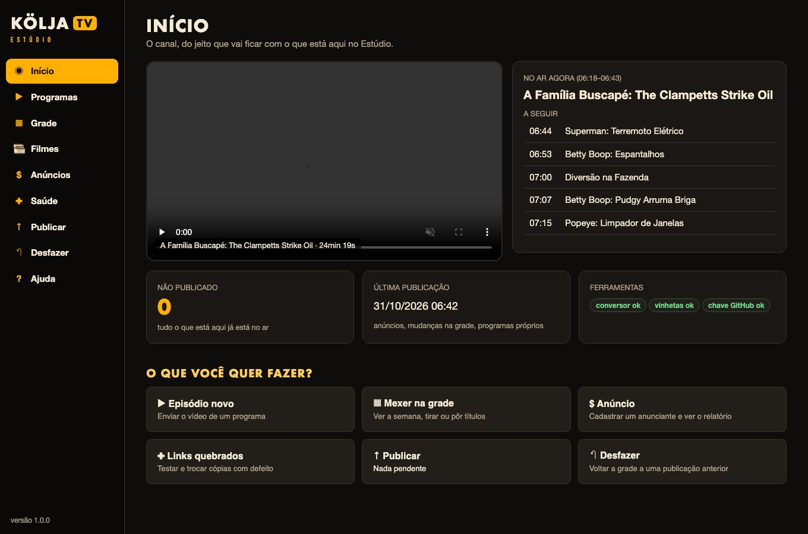
Início: o que está no ar agora, o que vem a seguir e atalhos para as tarefas.
Na tela Início você vê o que o canal está passando agora (com as mudanças que você ainda não publicou), quantas mudanças esperam o botão Publicar, a última publicação e se as ferramentas estão em ordem (conversor, vinhetas, chave GitHub: verde é ok).
Se não abrir
Abra a pasta do canal (Documentos › KoljaTV-Estudio), entre em estudio e dê dois cliques em Estúdio KÖLJA TV.command.
Se o ícone sumiu da Mesa: dois cliques em estudio › instalar.command. Ele recria o ícone (e prepara o desenhista das vinhetas, se faltar).
Se o macOS disser que não pode abrir: clique com o botão direito no ícone › Abrir › Abrir.
Ao abrir com internet, o Estúdio busca sozinho a versão mais nova do canal no GitHub. Sem internet ele abre do mesmo jeito, com o que já tem.
2. Primeira vez: a chave do GitHub
Para publicar, o Estúdio precisa de uma chave do GitHub (um "token"). Você cola uma vez; ela fica guardada no Chaveiro do Mac, nunca em arquivo.
No navegador, entre na sua conta do GitHub e abra github.com/settings/personal-access-tokens/new.
Permissions › Repository permissions › Contents:Read and write.
Clique em Generate token e copie o código (começa com github_pat_).
No Estúdio: Publicar › Configurar › Colar uma chave nova do GitHub › cole › Guardar. Deve aparecer "Chave do GitHub ok".
Se a chave vencer (depois de 1 ano), o Estúdio avisa na hora de publicar: "A chave do GitHub não vale mais". É só repetir estes passos.
Enquanto não houver chave guardada, o Estúdio usa o login do GitHub deste Mac, se houver (aparece "usando o login do GitHub deste Mac").
3. Programas próprios
Criar um programa
Programas › + Novo programa.
Nome e descrição (a descrição aparece no guia da TV).
Horários fixos: clique nos dias (ficam âmbar) e escolha a hora. Para outro horário (ex.: reprise no sábado), + outro horário.
Episódios: "o novo substitui o anterior" (vai ao ar sempre o mais novo) ou "lista" (passa um por vez, em ordem, e recomeça).
Escolha a cor das vinhetas e, se quiser, a data de começo e de fim.
Salvar. A abertura ("KÖLJA TV apresenta" + o nome) e o encerramento (nome + dia e hora) são desenhados sozinhos em alguns segundos.
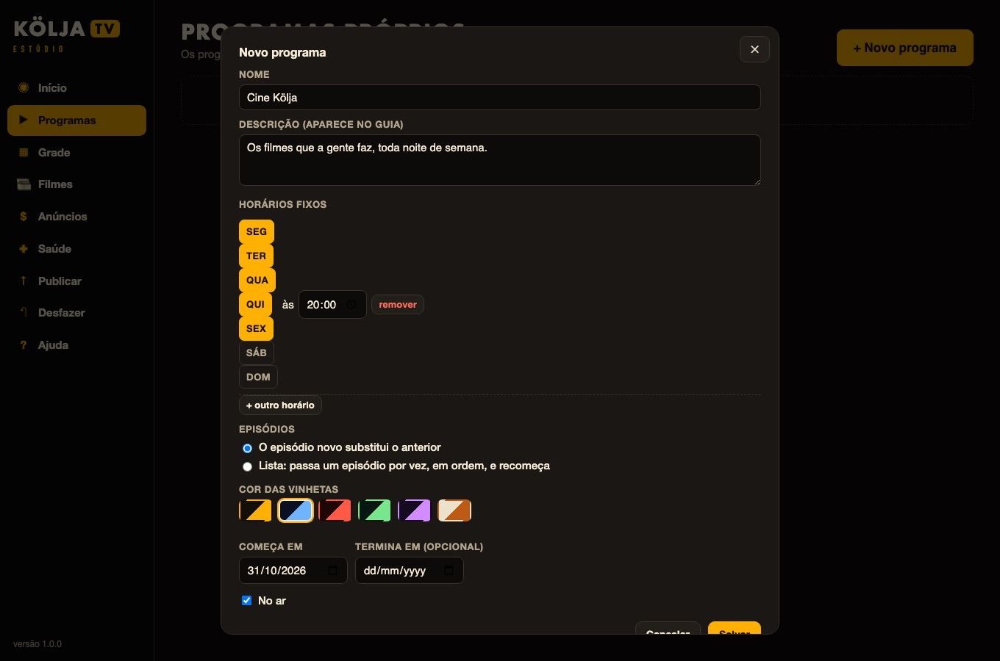
Novo programa: nome, dias, hora, modo dos episódios e cor.
O episódio precisa terminar antes da meia-noite, e dois programas não podem se cruzar no mesmo dia. O Estúdio avisa em vermelho quando isso acontece.
Enviar um episódio
No quadro do programa, escreva o título do episódio (opcional).
Arraste o arquivo de vídeo para o quadro tracejado (ou clique nele e escolha o arquivo). Serve MP4, MOV, MKV, AVI...
Embaixo, à direita, aparece a barra: primeiro "Recebendo", depois "Convertendo". O Estúdio deixa o vídeo no formato do canal (480p, som no mesmo volume dos filmes). Um episódio de 30 minutos leva alguns minutos.
Quando aparecer "Episódio pronto", ele está na lista com a etiqueta falta publicar. Clique em Ver para assistir.
Vá em Publicar quando quiser que vá ao ar.
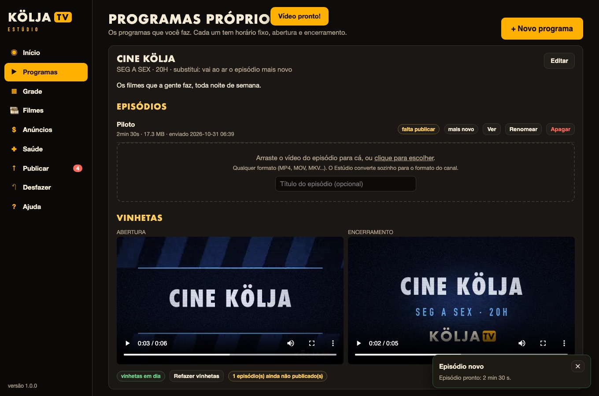
O programa com seu episódio e as vinhetas.
Renomear troca o título; Apagar tira o episódio (se já foi publicado, ele continua guardado no GitHub, para o Desfazer). No modo lista, ↑ ↓ mudam a ordem.
Vinhetas
Mudou o nome, o horário ou a cor? O Estúdio refaz as vinhetas sozinho ao salvar. Se aparecer "as vinhetas precisam ser refeitas", clique em Refazer vinhetas.
4. Grade
A grade é a programação do canal, minuto a minuto. Ela se monta sozinha a partir dos blocos do dia (Sessão Terror, Desenhos...) e dos títulos de cada bloco; os seus programas entram por cima, no horário deles.
Grade. Use ‹ semana anterior, próxima semana › e Hoje.
Clique no dia (SEG, TER...). A lista mostra o que passa, com hora, bloco e duração. Seus programas têm fundo âmbar.
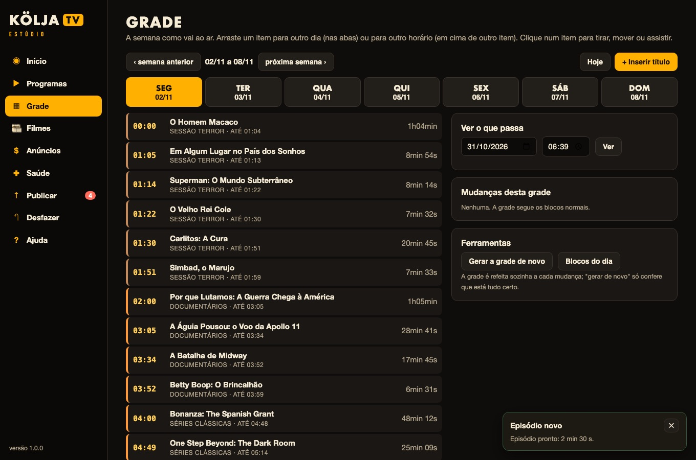
A grade de um dia.
Ver o que passa num horário
No quadro Ver o que passa, escolha data e hora › Ver. Mostra o título, o trecho exato no vídeo e o que vem depois.
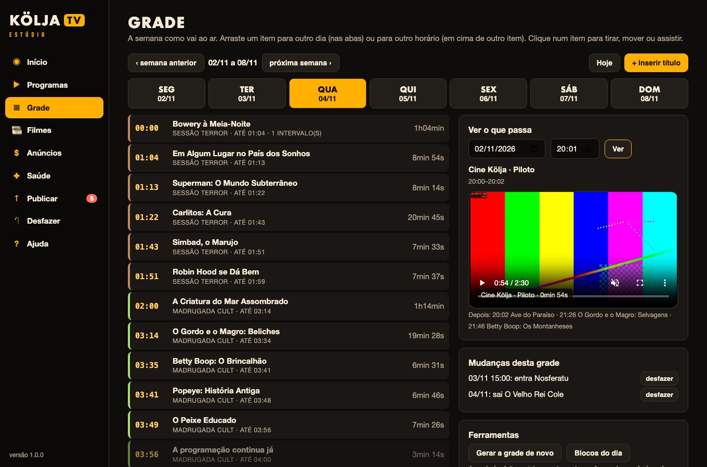
Ver o que passa: segunda, 20:01, o Cine Kölja no ar.
Tirar um título de um dia
Clique no item › Tirar deste dia.
Outro título do mesmo bloco entra no lugar. O que você tirou não some: passa no dia seguinte.
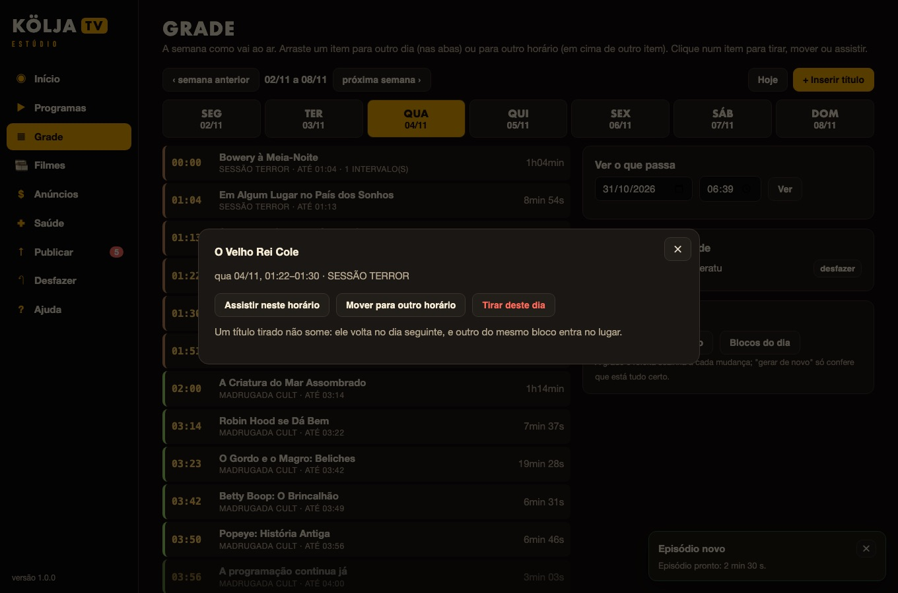
Clicando num item: assistir, mover ou tirar.
Inserir um título num dia e hora
+ Inserir título, escolha a data e a hora.
Digite parte do nome e clique no título. Também dá para pôr um episódio extra de um programa seu.
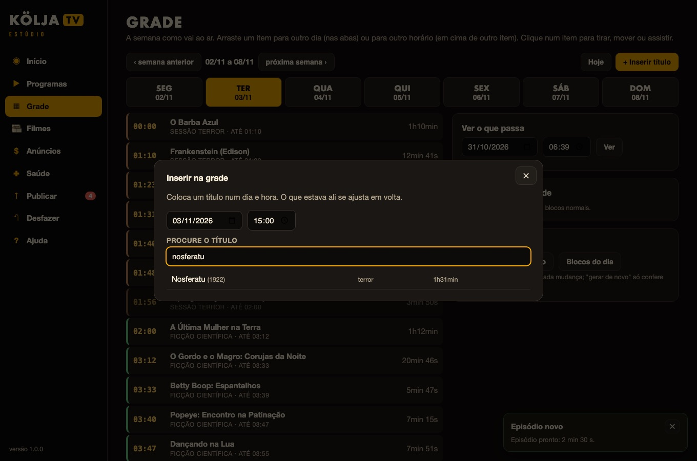
Inserindo Nosferatu numa terça às 15:00.
Mover
Arraste o item: solte em cima de outro dia (nas abas) para ir para o mesmo horário daquele dia, ou em cima de outro item para ir para o horário dele. Ou clique no item › Mover para outro horário.
Mudanças desta grade
Tudo o que você tirou, inseriu ou moveu fica listado em Mudanças desta grade. desfazer ao lado de cada uma volta ao normal.
Blocos do dia
Blocos do dia mostra a divisão de todo dia: a partir de que hora entra cada bloco. O número entre parênteses é quantos títulos o bloco tem. "Alterna com" troca de bloco dia sim, dia não.
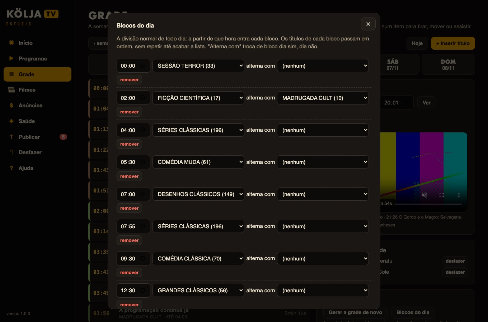
Blocos do dia.
O primeiro bloco precisa começar às 00:00. Datas especiais (como o Halloween) têm um dia só delas e não mudam aqui.
Gerar a grade de novo
A grade é refeita sozinha a cada mudança. Gerar a grade de novo só confere que está tudo certo e diz quantos itens, programas e anúncios a semana tem. No ar, o próprio canal refaz a grade a cada 20 minutos.
5. Filmes
O acervo: filmes, desenhos, curtas e séries, todos em domínio público, tocados direto do Internet Archive.
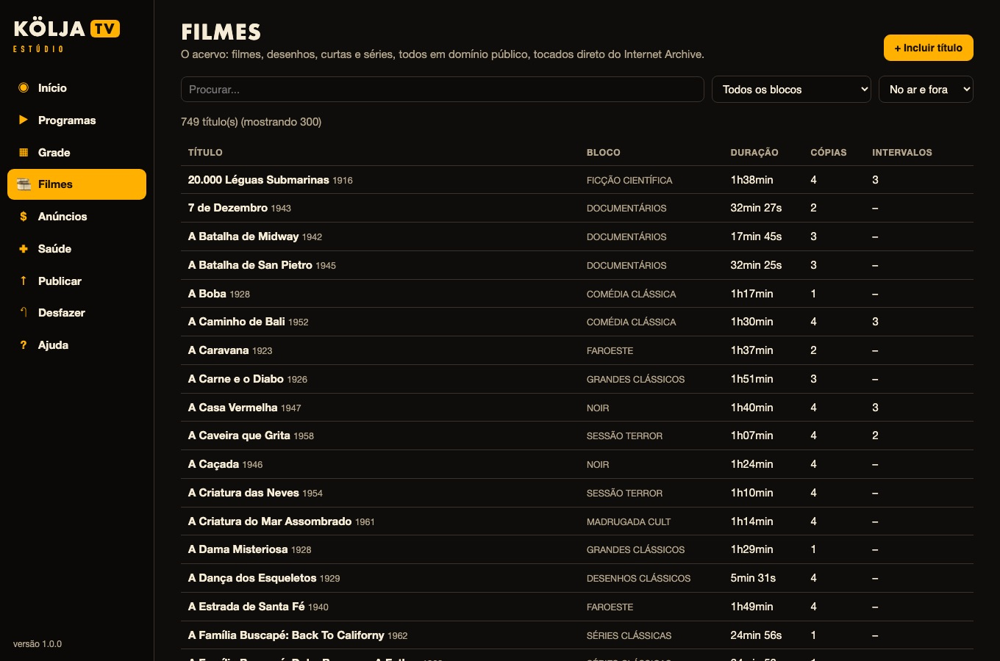
Procure pelo nome, filtre por bloco ou por "no ar / fora do ar".
Clique num título para abrir a ficha:
Tirar do ar: o título sai da grade (o registro fica; Pôr de volta no ar desfaz).
Inserir na grade...: leva para a Grade com o título já procurado.
Cópias: o canal toca a primeira; se falhar, a seguinte. usar primeiro, remover, Incluir cópia (cole o endereço), Procurar cópias novas (busca no Internet Archive).
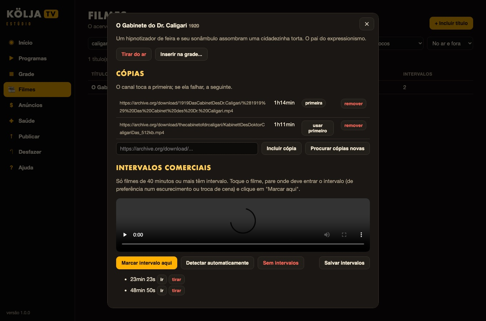
A ficha de um filme: cópias e intervalos.
Intervalos comerciais de um filme
Filmes de 40 minutos ou mais param para o intervalo mais ou menos a cada 25 minutos. O lugar de cada parada já foi achado automaticamente; você pode ajustar:
Na ficha, toque o filme no player e pare onde deve entrar o intervalo (de preferência num escurecimento ou troca de cena).
Marcar intervalo aqui. Para tirar um, tirar ao lado dele; ir pula para aquele ponto.
Salvar intervalos. Sem intervalos faz o filme passar direto. Detectar automaticamente refaz a busca (precisa de internet, leva alguns minutos).
Incluir um título
Só entra no canal o que é domínio público. Filme americano publicado antes de 1931 é domínio público nos EUA; depois disso, depende de registro e renovação (a regra completa está em docs/PD.md na pasta do canal). Para passar com anúncio pago, também precisa ser domínio público no Brasil (filmes lançados até 1955). Na dúvida, não inclua.
+ Incluir título.
Título, ano, país, bloco e tipo.
Endereço do vídeo: no Internet Archive, abra o item, clique em "DOWNLOAD OPTIONS" › MPEG4 com o botão direito › "Copiar endereço do link". Cole aqui (começa com https://archive.org/download/).
Duração (ou deixe vazio para o Estúdio medir pela internet), sinopse de uma linha e por que é domínio público.
Marque "Confirmo que conferi" › Incluir.
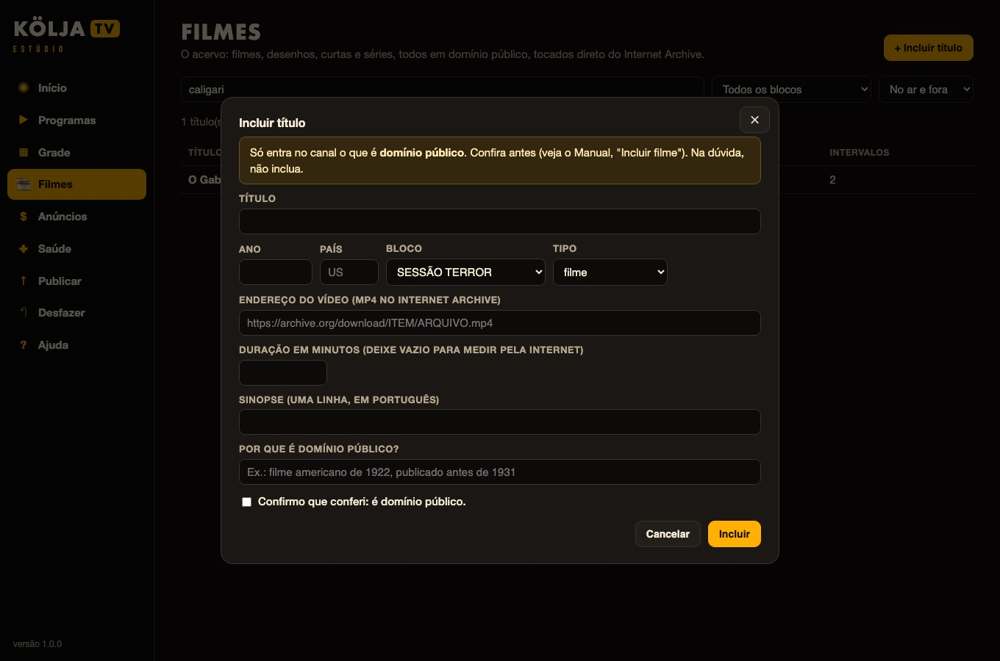
Incluir título.
6. Anúncios
O anúncio entra nos intervalos dos filmes, no lugar das nossas chamadas; o intervalo continua do mesmo tamanho, então a grade não muda de horário.
Anúncios › + Novo anúncio.
Nome do anúncio, anunciante, datas de começo e fim, e o valor por inserção (serve para o relatório).
Inserções: "por dia, em qualquer bloco" (ex.: 5 por dia) ou "por dia, em blocos escolhidos" (ex.: 2 na Sessão Terror, 1 no Noir).
Salvar. Depois, no cartão do anúncio, Enviar vídeo (até 2 minutos; o Estúdio converte).
Publicar.
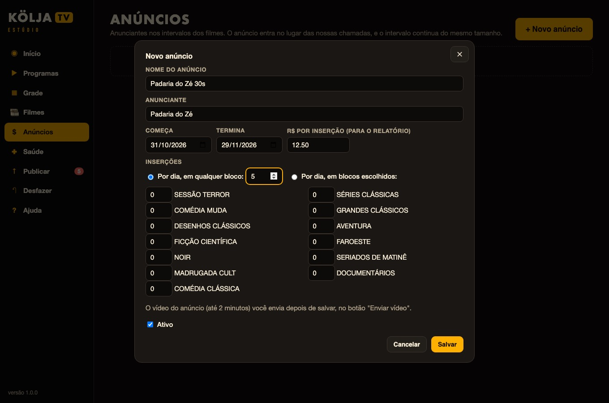
Novo anúncio.
As inserções se espalham pelo dia, nos intervalos dos filmes. Desenhos, curtas e episódios não têm intervalo, então um bloco sem filmes longos não recebe anúncio.
Relatório do anúncio
Relatório mostra, dia a dia, quantas inserções foram pedidas, quantas a grade tem e em quais blocos, mais o total e o valor. Se faltar intervalo para cumprir o pedido, ele avisa em amarelo e marca o dia em vermelho. Imprimir gera papel ou PDF para o anunciante.
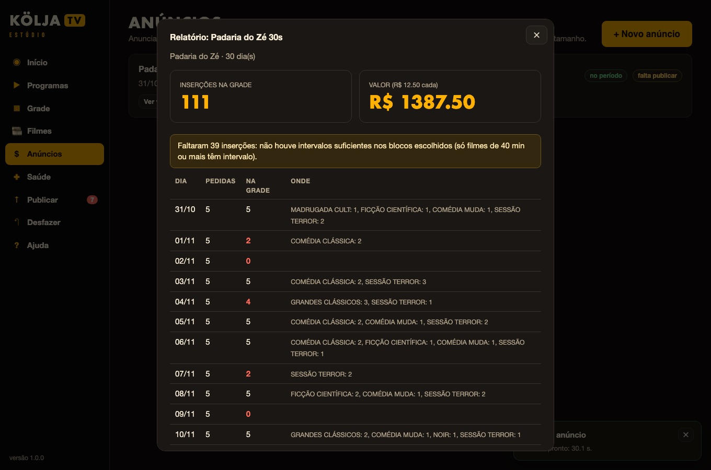
Relatório de um mês de campanha.
Para vender, ofereça "por dia, em qualquer bloco" ou em blocos com filmes longos (Sessão Terror, Grandes Clássicos, Comédia Clássica, Noir). Confira o relatório antes de fechar a quantidade.
7. Saúde: links quebrados
Os filmes vêm do Internet Archive, e às vezes um link para de funcionar. O canal no ar já pula sozinho o que está quebrado (e o robô do canal testa os próximos a cada 20 minutos), mas aqui você troca a cópia de vez.
Saúde › Testar os próximos 2 dias (uns 2 minutos) ou Testar o acervo inteiro (mais demorado).
Cada título com problema aparece num cartão. Use:
Trocar: usar a cópia boa e remover as quebradas (um clique resolve);
Procurar cópia nova quando nenhuma cópia funciona;
Tirar do ar se não houver cópia.
Publicar.
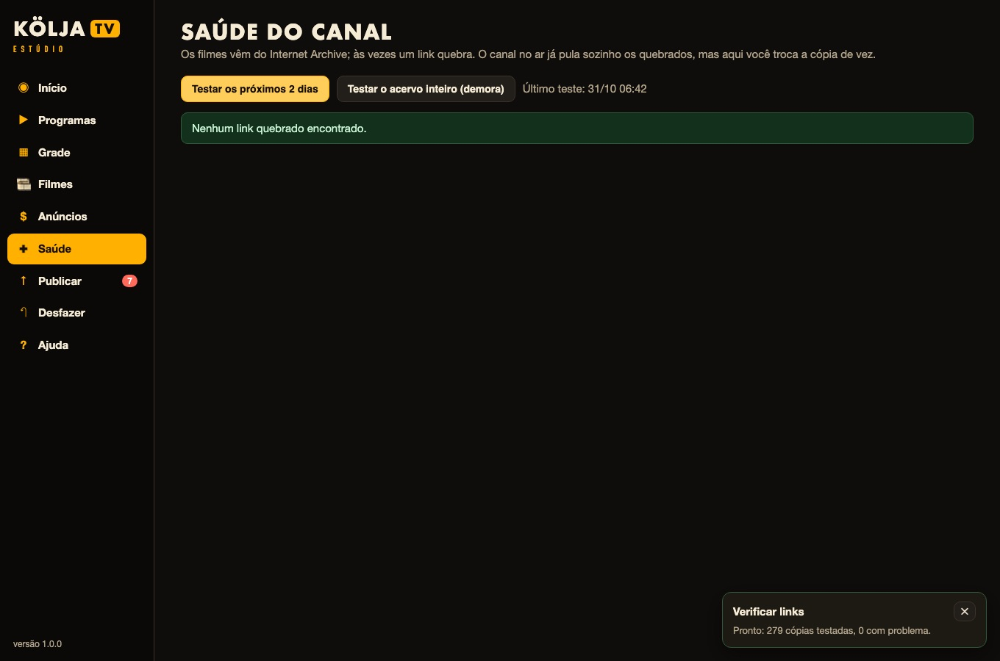
Saúde depois de um teste sem problemas.
8. Publicar
Publicar. A lista "O que vai" mostra cada mudança e cada vídeo que vai subir.
Se aparecer algo em vermelho, resolva antes (o texto diz o quê). Amarelo é só aviso.
Quer conferir sem enviar nada? Ensaio.
Publicar agora. Os vídeos sobem (pode levar alguns minutos para episódios longos) e a grade é publicada.
Em 1 a 3 minutos o canal se atualiza: site, guia e os aparelhos com Retrotv.
Conferir agora abre a grade publicada e mostra se cada programa e anúncio já está lá.
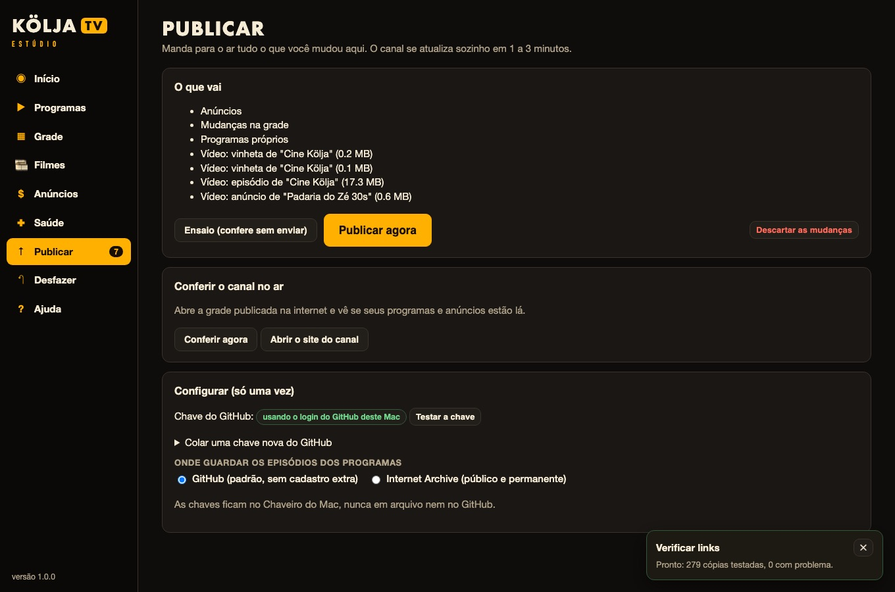
Publicar: o que vai, ensaio, publicar, conferir e configurar.
Onde guardar os episódios: GitHub (padrão) ou Internet Archive (público e permanente; precisa das chaves de archive.org/account/s3.php). Anúncios e vinhetas sempre vão para o GitHub.
Descartar as mudanças joga fora tudo o que ainda não foi publicado (os vídeos enviados continuam no Mac).
9. Desfazer
Cada publicação fica guardada. Se algo saiu errado:
Desfazer. A primeira da lista é a que está no ar agora.
Na publicação para a qual quer voltar, Voltar para esta › confirme.
A grade daquela publicação é publicada de novo. Em 1 a 3 minutos está no ar.
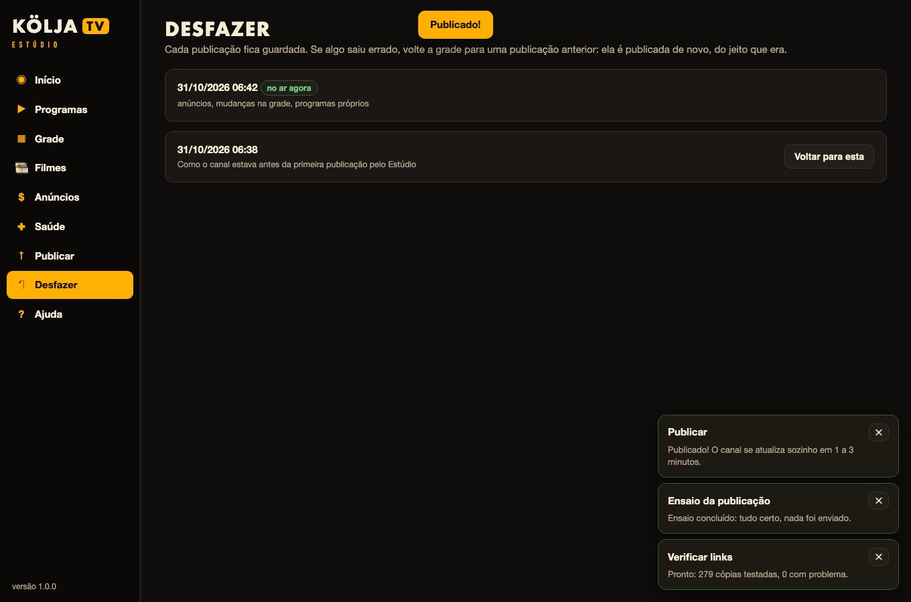
Desfazer: a lista das publicações.
Desfazer também é uma publicação: se voltou demais, é só voltar de novo para a mais nova. Se houver mudanças não publicadas, o Estúdio pede para publicar ou descartar antes.
10. Problemas comuns
O que aparece
O que fazer
"Sem internet" / "Não consegui falar com o GitHub"
Nada foi publicado. Continue editando; publique quando a internet voltar.
"A chave do GitHub não vale mais"
Faça uma chave nova (capítulo 2) e cole em Publicar › Configurar.
"Alguém mudou os mesmos arquivos no GitHub ao mesmo tempo"
Nada foi publicado e suas mudanças continuam aqui. Feche e abra o Estúdio (ele busca a versão nova) e publique de novo. Se repetir, publique de novo mais tarde.
Meu programa não aparece na grade
Confira em Programas: tem episódio? Está "No ar"? Tem aviso vermelho (horário batendo com outro, ou passando da meia-noite)? A data de começo já chegou? Na internet, só aparece depois de Publicar.
"A conversão falhou"
O arquivo pode estar incompleto. Abra no QuickTime para ver se toca; se tocar, exporte de novo (Arquivo › Exportar › 1080p) e envie esse.
"Pouco espaço no disco"
Libere espaço no Mac. O Estúdio precisa de pouco mais que o dobro do tamanho do vídeo enquanto converte.
"Falta o desenhista das vinhetas"
Dois cliques em estudio › instalar.command (precisa de internet só nessa hora).
"O Estúdio parou" / a página não responde
Dois cliques no ícone da Mesa de novo e recarregue a página.
Anúncio com inserções faltando
Escolha blocos com filmes longos, ou "qualquer bloco", ou diminua as inserções por dia (veja o Relatório).
Um filme travou no meio no ar
O canal mostra "Problemas técnicos · já voltamos" e segue sozinho. Depois, em Saúde, teste e troque a cópia.
11. Onde fica cada coisa
O quê
Onde
A pasta do canal (cópia do repositório)
Documentos › KoljaTV-Estudio
O Estúdio (programa)
KoljaTV-Estudio › estudio (o ícone da Mesa abre este)
Vídeos dos programas e anúncios (no Mac)
KoljaTV-Estudio › media › programas e media › anuncios